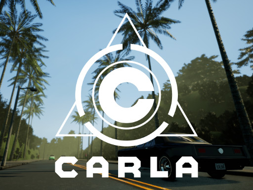

Github Page: https://github.com/Oguzhanka/carla-camera-data
Automated object recognition video data generation project. Uses Carla Sİmulator as the base tool. A drone-like camera flies over the city map and labels the locations and boundaries of cars, bikes and pedestrians into a telemetry file with a structured format. Video length, resolution and city and weather parameters are all configurable.
Github Page: https://github.com/Oguzhanka/crime-predictor
Implementation of a crime prediction model based on joint optimization of deep learning algorithms and decision tree spatial partitioning mechanism. The algorithm is capable of modeling spatial behaviors in different regions with different models. Surpasses the standard approaches applied on the same problem.
Probabilistic time-series prediction and optimization framework. Model parameters and state vectors are jointly optimized via filtering approaches. Also incorporates the uncertainty from the hyperparameter selection via Bayesian Hyperparameter Optimization. The framework is capable of jointly updating statistical time series models with deep feature extraction models.
Youtube Page: https://www.youtube.com/channel/UC03hvAxU2J5rPjUk_Dzgn7Q
Design and implementation of a omni-directional tele-operated robot. The robot is controlled by a player to play hockey in a hexagonal playing field. Awarded by the faculty members.
Design and implementation of a spectrogram application written in \Matlab. The project offers a user interface that allows user to record or load an audio signal and draw spectrograms with various different configurations.
Github Page: https://github.com/Oguzhanka/Digital-Signal-Oscilloscope
Design and implementation of a digital signal oscilloscope. Written in Verilog HDL. This project offers a digital signal oscilloscope that has almost the same functionality as a standard DSO. Implemented the design on an Altera Cyclone V FPGA board. Projected the oscilloscope screen on a VGA monitor.